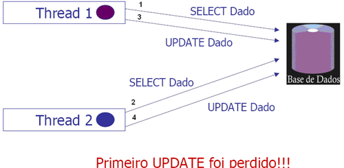
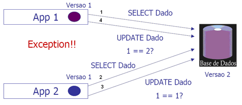

Informações
| Tipo: | Tutorial |
|---|---|
| Data de Publicação: | 07/10/2006 |
| Revisado em: | 07/10/2006 |
Vote!
Tags Relacionadas
Comentários ( 4 )
Imprimir
Concorrência com Hibernate
por:
Raphaela Galhardo Fernandes (raphaela@jeebrasil.com.br)
Gleydson Lima (gleydson@jeebrasil.com.br)
Este tutorial apresenta conceitos relacionados a concorrência entre transações e como elas podem ser tratadas utilizando o framework Hibernate.
1. Introdução
Em algumas situações pode acontecer que duas ou mais transações que ocorrem paralelamente leiam e atualizem o mesmo dado. Considerando que duas transações leiam um mesmo dado x quase que simultaneamente. Ambas as transações vão manipular esse mesmo dado com operações diferentes e atualizá-lo na base de dados. Para exemplificar, a Listagem 1 apresenta um exemplo de duas transações concorrentes manipulando o mesmo dado x.
No primeiro passo, ambas as transações lêem o dado x com o mesmo valor (2). Em seguida, T1 soma o valor x que leu com 1 e o valor de x para T1 passa a ser 3 (2 + 1). Já T2, soma o valor de x lido a 3 e x passa a ter o valor 5 (2 + 3). Por fim, ambos T1 e T2 gravarão os novos valores de x calculados na base de dados, respectivamente. Como não há controle de concorrência de acesso ao dado x, o seu valor final corresponderá a 5, ou seja, o valor calculado por T2, significando que as alterações feitas por T1 foram descartadas.
1) Transação 1 (T1) lê x = 2 2) Transação 2 (T2) lê x = 2 3) T1 faz x = x + 1 4) T2 faz x = x + 3 5) T1 armazena o valor de x na base de dados 6) T2 armazena o valor de x na base de dados
Listagem 1 - Exemplo de Transação Concorrente
Para evitar a situação descrita anteriormente, deve-se controlar o acesso concorrente ao dado, ou seja, deve-se implementar o mecanismo de Locking. O gerenciamento de locking e da concorrência pode ser feito de duas formas:
- Pessimista: utilizar o controle pessimista significa que se uma transação T1 lê um dado e tem a intenção de atualizá-lo, esse dado será bloqueado (nenhuma outra transação poderá lê-lo) até que T1 o libere, normalmente após a sua atualização.
- Otimista: utilizar o controle otimista significa que se T1 lê e altera um dado ele não será bloqueado durante o intervalo entre a leitura e atualização. Caso uma outra transação T2 tenha lido esse mesmo dado antes de T1 o atualizá-lo tente alterá-lo em seguida na base de dados, um erro de violação de concorrência deve ser gerado.
2. Lock Otimista
Para ilustrar o gerenciamento do tipo otimista, um exemplo é dado a partir das Figura 1 e 2.
O problema é mostrado na Figura 1, onde, inicialmente, duas transações (ilustradas por Thread 1 e Thread 2) acessam um mesmo dado na base de dados (SELECT Dado), uma seguida da outra. Logo em seguida, a primeira transação (Thread 1) atualiza este dado na base de dados e depois quem também o atualiza é a segunda transação (Thread 2). Nesta abordagem otimista, acontece que a atualização do dado feita pela segunda transação sobrescreve a atualização realizada pela primeira, ou seja, a atualização feita pela primeira transação é perdida.

Figura 1 - Loocking Otimista 1
Para resolver o problema descrito anteriormente com a abordagem otimista, pode-se utilizar o conceito de Version Number, que é um padrão utilizado para versionar numericamente os dados de uma linha de uma tabela na base de dados. Por exemplo, na Figura 2, também, inicialmente, duas transações (ilustradas por App 1 e App 2) acessam um mesmo dado na base de dados (SELECT Dado), uma seguida da outra. Com isso, esse mesmo dado nas duas transações são rotulados com a versão atual dele na base de dados, no caso, Versão 1. Logo em seguida, a segunda transação atualiza este dado. Quando a atualização vai ser feita, é verificado se a versão do dado na transação corresponde à versão dele na base de dados. Nesta primeira atualização, a versão da transação é 1 e a da base de dados também. Como elas são iguais, a atualização é efetivada e a versão do dado na base de dados passa a ser a Versão 2. Por fim, a primeira transação vai também atualizar este mesmo dado. Dessa forma, também é feita uma comparação entre as versões do dado na transação e na base de dados. Neste caso, a versão na transação é a 1 e na base de dados é 2, ou seja, as versões não correspondem. Assim, um erro é disparado e a atualização desejada pela primeira transação não é concretizada, evitando que a atualização feita pela segunda transação não seja desfeita.

Figura 2 - Loocking Otimista 2
Com o Hibernate, uma forma de utilizar o versionamento dos dados é utilizar o elemento version no mapeamento das tabelas. Para exemplificar o seu uso, considera-se a classe ContaCorrente na Listagem 2 que será mapeada para a tabela CONTA_CORRENTE na base de dados. Dentre os diversos atributos da classe, está o atributo denominado versao que irá justamente guardar a versão atual das linhas da tabela. A tabela CONTA_CORRENTE também deve ter uma coluna para onde esse atributo versao será mapeado.
package br.com.jeebrasil.dominio.ContaCorrente; public class ContaCorrente{ //Atributo utilizado para o versionamento private int versao; //Demais atributos private int id; private double saldo; private Correntista correntista; //Outros atributos //... public int getVersao(){ return versao; } public setVersao(int versao){ this.versao = versao; } //Demais métodos de acesso e modificação de dados //... }
Listagem 2 - Classe de Domínio: ContaCorrente 1
No arquivo de mapeamento da classe ContaCorrente, ContaCorrente.hbm.xml (ver Listagem 3), o atributo version é utilizado para mapear o atributo versao da classe ContaCorrente para a coluna VERSAO da tabela CONTA_CORRENTE. Com esse mapeamento, toda vez que uma determinada linha for atualizada na base de dados, a sua coluna VERSAO será incrementada de uma unidade, indicando a nova versão dos dados.
<hibernate-mapping>
<class name="br.com.jeebrasil.dominio.ContaCorrente"
table="CONTA_CORRENTE">
<id name="id" column="ID_CONTA" type="int">
<generator class="sequence">
<param name="sequence">conta_seq</param>
</generator>
</id>
<version name="versao" column="VERSAO"/>
<property name="saldo" type="double" column="SALDO"/>
<many-to-one name="correntista"
class="br.com.jeebrasil.dominio.Correntista"
column="ID_CORRENTISTA"/>
<!-- Demais Atributos -->
</class>
</hibernate-mapping>
Listagem 3 - ContaCorrente.hbm.xml 1
Outra forma de implementar o lock otimista é utilizando o atributo timestamp no mapeamento da tabela. Neste caso, a classe ContaCorrente do exemplo anterior ao invés de ter um atributo inteiro para guardar a versão do dado, teria uma atributo do tipo java.util.Date para guardar o instante no tempo da última atualização. Neste caso, a classe de domínio seria equivalente à mostrada na Listagem 4 e seu mapeamento ao exibido na Listagem 5. Neste exemplo, a tabela CONTA_CORRENTE deve conter uma coluna do tipo timestamp denominada DATA_ULTIMA_ATUALIZACAO.
package br.com.jeebrasil.dominio.ContaCorrente;
public class ContaCorrente{
//Atributo utilizado para o versionamento
private Date ultimaAtualizacao;
//Demais atributos
//...
public Date getUltimaAtualizacao(){
return ultimaAtualizacao;
}
public setUltimaAtualizacao(Date ultimaAtualizacao){
this.ultimaAtualizacao = ultimaAtualizacao;
}
//Demais métodos de acesso e modificação de dados
//...
}
Listagem 4 - Classe de Domínio: ContaCorrente 2
<hibernate-mapping>
<class name="br.com.jeebrasil.dominio.ContaCorrente"
table="CONTA_CORRENTE">
<id name="id" column="ID_CONTA" type="int">
<generator class="sequence">
<param name="sequence">conta_seq</param>
</generator>
</id>
<timestamp name="ultimaAtualizacao"
column="DATA_ULTIMA_ATUALIZACAO"/>
<!-- Demais Atributos -->
</class>
</hibernate-mapping>
Listagem 5 - ContaCorrente.hbm.xml 2
Se a tabela não possuir uma coluna para guardar a versão do dado ou a data da última atualização, com Hibernate, há uma outra forma de implementar o lock otimista, porém essa abordagem só deve ser utilizada para objetos que são modificados e atualizados em uma mesma sessão (Session). Se este não for o caso, deve-se utilizar uma das duas abordagens citadas anteriormente.
Com essa última abordagem, quando uma determinada linha vai ser atualizada, o Hibernate verifica se os dados dessa linha correspondem aos mesmos dados que foi recuperado. Caso afirmativo, a atualização é efetuada. Para isso, no mapeamento da tabela, deve-se incluir o atributo optimistic-lock (Listagem 6). Por exemplo, no mapeamento da classe ContaCorrente, na tag class apareceria este atributo.
<hibernate-mapping>
<class name="br.com.jeebrasil.dominio.ContaCorrente"
table="CONTA_CORRENTE" optimist-lock="all">
<id name="id" column="ID_CONTA" type="int">
<generator class="sequence">
<param name="sequence">conta_seq</param>
</generator>
</id>
<property name="saldo" type="double" column="SALDO"/>
<property name="descricao" type="java.lang.String"
column="DESCRICAO"/>
<many-to-one name="correntista"
class="br.com.jeebrasil.dominio.Correntista"
column="ID_CORRENTISTA"/>
<!-- Demais Atributos -->
</class>
</hibernate-mapping>
Listagem 6 - ContaCorrente.hbm.xml 3
Dessa maneira, quando uma linha dessa tabela fosse atualizada, o SQL equivalente gerado para a atualização seria o exibido na Listagem 7. Neste exemplo, considera-se a atualização do saldo para R$ 1.500,00 de uma determinada conta de saldo R$ 1.000,00.
UPDATE CONTA_CORRENTE SET SALDO = 1500 WHERE ID_CONTA = 104 AND SALDO = 1000 AND DESCRICAO = "DESCRICAO DA CONTA" AND ID_CORRENTISTA = 23
Listagem 7 - Exemplo optimist-lock="all"
3. Lock Pessimista
A estratégia de lock pessimista para proibir o acesso concorrente a um mesmo dado da base de dados é feita bloqueando o mesmo até que a transação seja finalizada.
Alguns banco de dados, como o Oracle e PostgreSQL, utilizam a construção SQL SELECT FOR UPDATE para bloquear o dado até que o mesmo seja atualizado. O Hibernate fornece um conjunto de modos de lock (constantes disponíveis na classe LockMode) que podem ser utilizados para implementar o lock pessimista.
Considerando o exemplo da Listagem 8, onde um determinado aluno é consultado na base de dados e tem seu nome atualizado. Neste caso, não há um bloqueio ao dado, então qualquer outra transação pode acessar este mesmo dado concorrentemente e modifica-lo, de forma que poderá ocorrer uma incosistência dos dados. Na Listagem 9, há um exemplo de uso do lock pessimista para resolver este problema, bastando passar a constante LockMode.UPGRADE como terceiro argumento do método get do objeto Session.
Transaction tx = session.beginTransaction();
Aluno aluno = (Aluno) session.get(Aluno.class, alunoId);
aluno.setNome("Novo Nome");
tx.commit();
Listagem 8 - Transação sem Lock
Transaction tx = session.beginTransaction();
Aluno aluno =
(Aluno) session.get(Aluno.class, alunoId, LockMode.UPGRADE);
aluno.setNome("Novo Nome");
tx.commit();
Listagem 9 - Transação com Lock Pessimista: LockMode.UPGRADE
O método get do objeto Session pode receber como terceiro argumento para implementar o lock pessimista as seguintes constantes:
- Lock.NONE: Só realiza a consulta ao banco se o objeto não estiver no cache.
- Lock.READ: Ignora os dados no cache e faz verificação de versão para assegurar-se de que o objeto em memória é o mesmo que está no banco.
- Lock.UPDGRADE: Ignora os dados no cache, faz verificação de versão (se aplicável) e obtém lock pessimista do banco (se suportado).
- Lock.UPDGRADE_NOWAIT: Mesmo que UPGRADE, mas desabilita a espera por liberação de locks, e dispara uma exceção se o lock não puder ser obtido. Caso especial do Oracle que utiliza a cláusula SELECT ... FOR UPDATE NOWAIT para realizar locks.
- Lock.WRITE: Obtida automaticamente quando o Hibernate realiza alguma inserção ou atualização na base de dados.
4. Referências
- Christian Bauer e Gavin King. Hibernate in Action. 2005.
- Grupo Hibernate. Hibernate Reference Documentation. Version 3.0.5. Obtido em http://www.hibernate.org
- Gleydson de Azevedo Ferreira Lima. Material Didático. 2005.
- Nick Heudecker. Introdução ao Hibernate.
- Maurício Linhares. Introdução ao Hibernate 3.
- Francesc Rosés Albiol. Introducción a Hibernate. 2003.
- Fabiano Kraemer, Jerônimo Jardel Vogt. Hibernate, um Robusto Framework de Persistência Objeto-Relacional. 2005.
Comentários (4)
- Rafaella e Gleydson, voces estã de parabéns pelos tutorias excelentes que estão publicados sobre o Hibernate. Ja estou ancioso pra saber qual será o proximo. Como sugestão, voces poderiam explorar o Lazy-Loading. Parece que só funciona dentro da mesma Session (Como seria em aplicações Web?). Obrigado
- postado por Antonio Gomes de Castro Jr em 30/11/2006 às 23:21
- ótimo artigo
- postado por Israel em 27/02/2007 às 23:21
- Sensacional.....gostei e espero que continuem assim...votos de muitos sucessos !
- postado por Edson Chinguto em 26/04/2007 às 23:21
- parabéns !!!
- postado por Diogenes Marcato Crespo em 11/09/2008 às 23:21